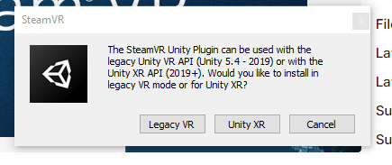
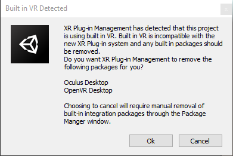

SteamVR
Download and import the SteamVR Plugin from the Unity Store.
Hurricane Integration
- Extract the SteamVR Integration located at /HurricaneVR/Framework/Integrations.
- Press “Import” when prompted to import the Partial Input binding for ‘HVR’. If a second option comes up, choose “Replace”, not “Merge”
- The SteamVR Input window should present itself, if not open this window via your toolbar at : Window → SteamVR Input
- At the bottom of the SteamVR Input window, locate and press the “Save and generate” button.
- Add HVR_STEAMVR to your project setting scripting define symbols or by using Tools → HurricaneVR → Setup
- Wait a moment as the imported code becomes compiled.

Unity 2019
Because 2019 has access to Legacy and XR Plugin Management, you may receive this prompt after you import the plugin.
At this point you can decide whether to remain with Legacy OpenVR or update to XR Plugin (OpenVR)

If you decide to convert to XR Plugin and receive this prompt, be sure to press Ok so that it will clean out the Legacy packages for you, if you fail to do so then you must remove the old packages manually.
